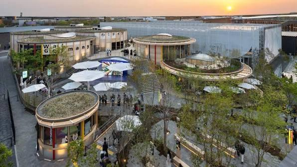
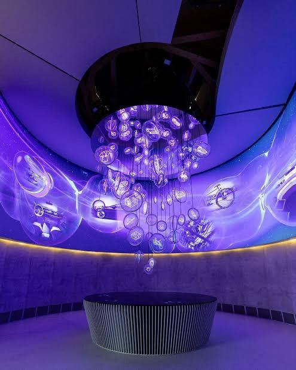
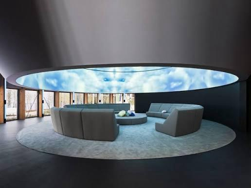
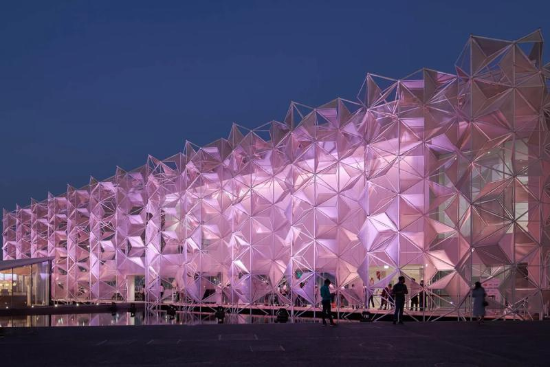
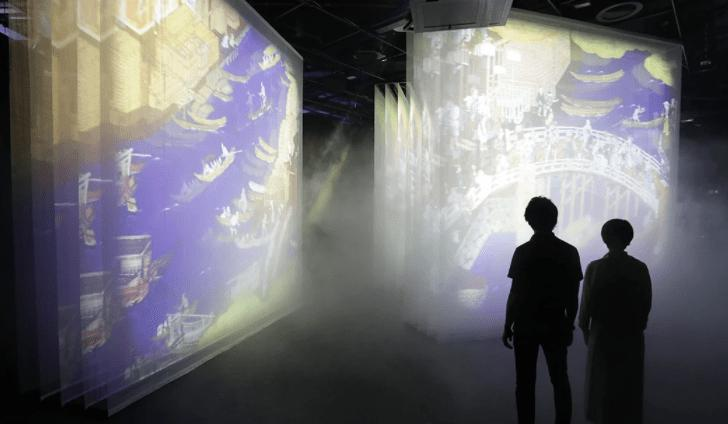
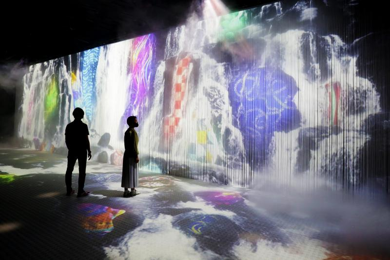
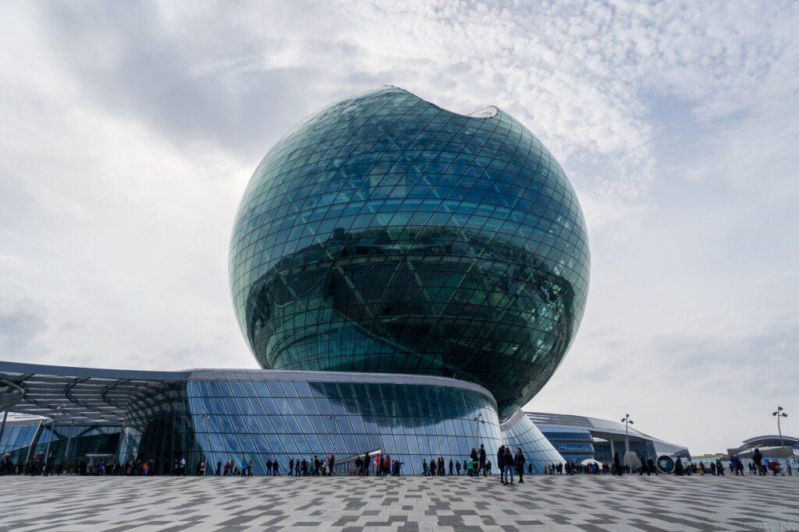
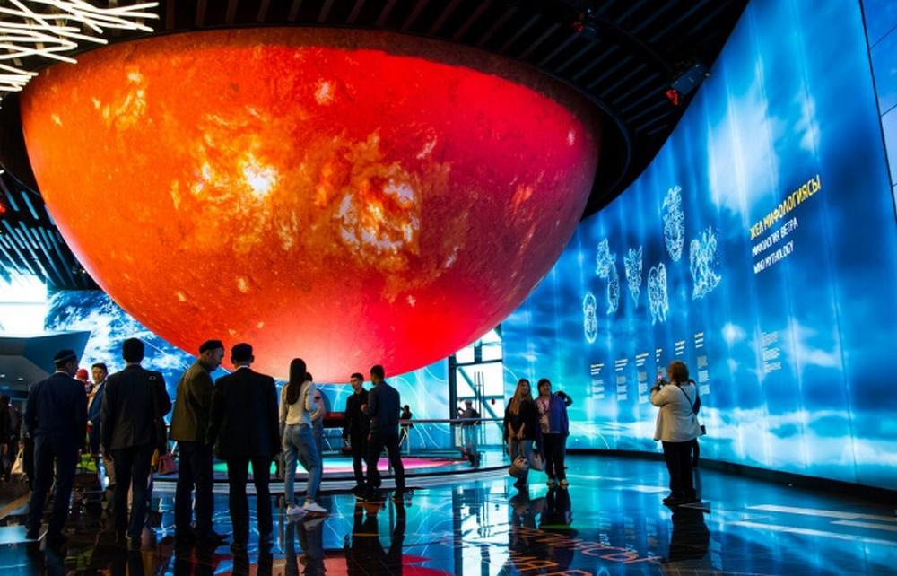
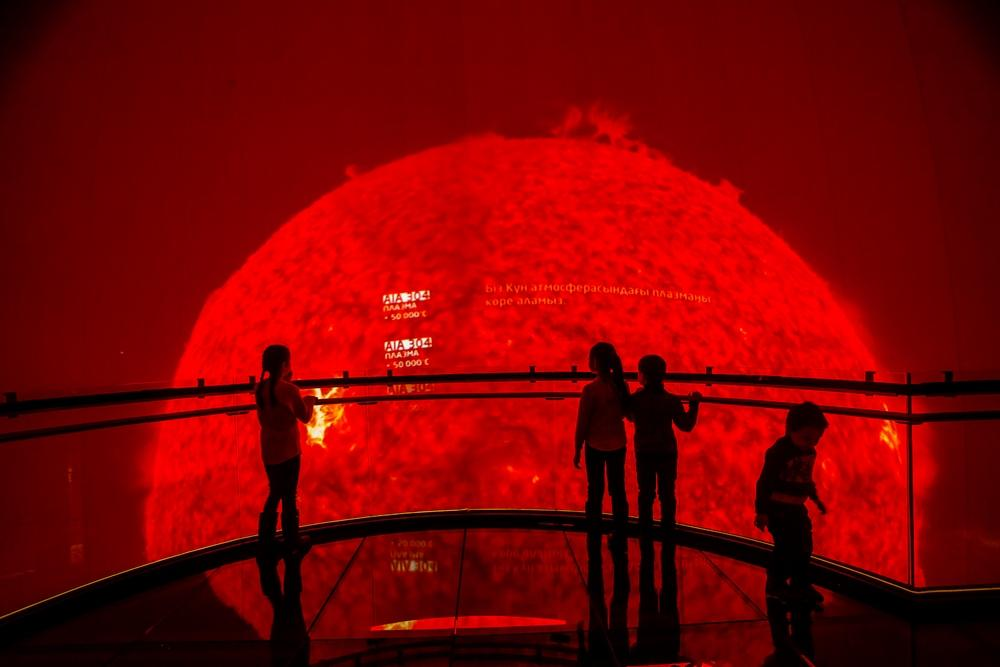

World Expo
Delivered integration, commissioning and technical delivery support across multiple national pavilions at Expo 2025 Osaka, including the Germany and Luxembourg Pavilions. Working within a fast-paced and high-profile international exhibition environment, Benjamin coordinated integrator teams, troubleshooting and systems performance across AV, multimedia and interactive technologies. Close collaboration with project engineers, design teams and client representatives ensured technical delivery aligned with creative intent, operational requirements and the delivery of seamless, fully immersive visitor experiences.



World Expo
Delivered on-site technical leadership across multiple national pavilions at Expo 2020 Dubai, including the Japan and Belarus Pavilions. Responsible for integration and commissioning activities across AV, multimedia, lighting and interactive technologies, Benjamin acted as the primary on-site technical decision maker for the integrator team. Technical coordination, issue resolution and close collaboration with stakeholders ensured programme requirements, operational readiness and quality standards were achieved within a complex and fast-paced international exhibition environment.



World Expo
Managed delivery and on-site operations across two floors of the Kazakh National Pavilion at Expo 2017 Astana. Responsible for coordinating integrator teams, installation activities and multidisciplinary exhibition delivery, Benjamin oversaw technical, fit-out and operational workflows to maintain programme milestones and quality standards. Acting as the primary on-site point of contact for technical and operational issues, proactive troubleshooting and coordination ensured seamless visitor experiences across a complex international exhibition environment.


